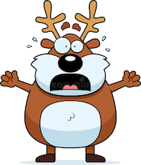
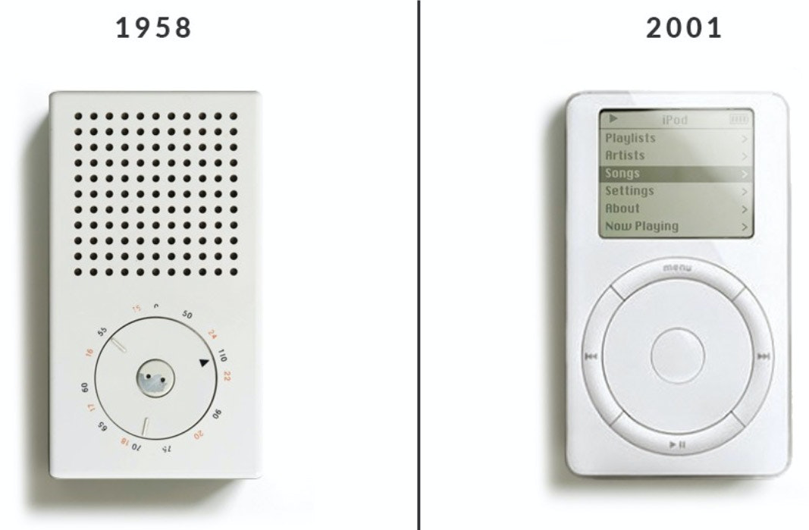
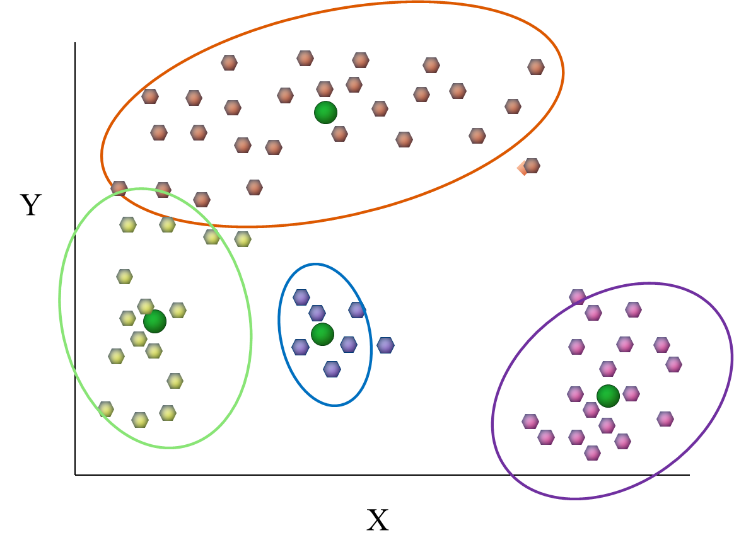
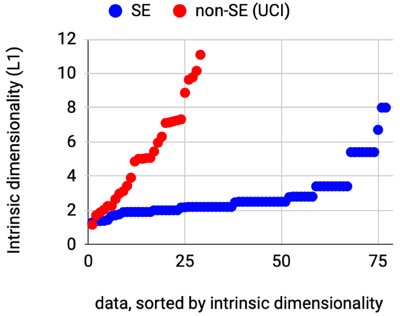
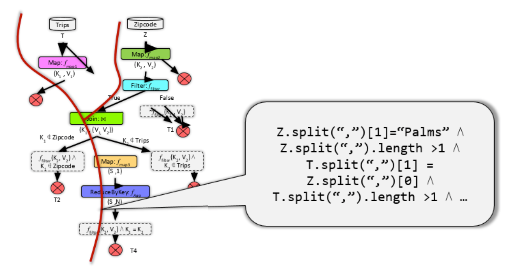
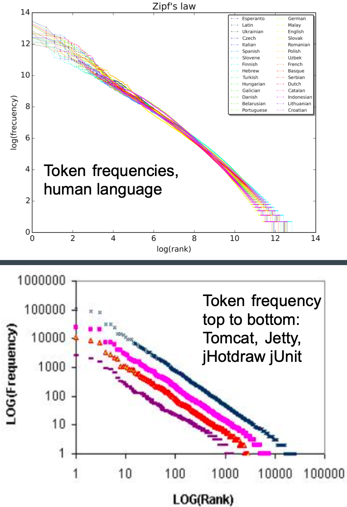
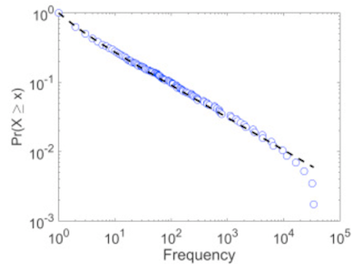

Tim Menzies
timm@ieee.org
http://menzies.us
Sat Jul 31, 2021
 Are you trapped like a deer in the headlights, frozen and terrified, by on-coming AI software? Well, then you are not a software engineer. When SE people are worried about software, they change it. Opaque systems are refactored into simpler and more maintainable code. Complexity is removed. Simplicity is installed.
Time to start practicing refactoring AI tools. Start with a simple object model then do some mixing-and-matching to implement an interesting range of functionality. Here’s what you have already (in under 500 lines of code):
There’s nothing magical about my code. Its certainly not the absolute optimum way to implementing all these tasks. In fact, the best thing I can say about this code is that it is short and easy to change. Treat it as a challenge of something you can do better than me. To practice refactoring AI tools, start with the few hundreds (or so) lines of code shown below. Implement them in your favorite language. Then try splashing our a little- mix and match some functionality. Pull out some code then add in something different. Test that addition. See if it works better than my stuff. Have fun with it!
And when you do, be a software engineering. Try and come up with some underling object model that lets you handle not just your new idea, but also a whole product line of variations around that idea.
But why is it called keys? Well, the “key” to simpler AI is “keys”. Many results show that systems often exhibit the same effect 1; i.e. a few key features control the rest. Just to say the obvious, for systems containing a few keys, then explanation and control is just a matter of running a handful of “what-if” queries across the keys. By exploiting the keys effect, it us possible to dramatically simplify the development of AI systems, as well as explaining their inner workings.
 One of my heroes is the industrial designer Dieter Rams. Credited with hundreds of iconic products (everything from the Oral-B toothbrush to home audio equipment, Braun coffee makers to calculators), he inspired a generation of designers, including those designing Apple products.
Rams firmly believes that “good design” involves as little design as possible which he describe as “Weniger, aber besser”; which translates to less, but better.
So how can we be less but better with AI? What do we now know about AI that we did not know before? And how can we use that to simplify how we do AI?
 One lesson learned over the last two decades is that the best thing to do with lots of data is (carefully) throw most of it away 2 3. The reason most data mining works is that tables of data (with many columns) can be approximated by a lower dimensional manifold (i.e. a smaller number of attributes) without loss of signal. When data maps to a low dimensional manifold then there are fewer ways examples can differ. When differences are less then continuity increases between nearby examples. So when we cluster similar examples, then we do not to reason separately about each example. Rather, we just cluster the data and reason about a few examples per cluster.
Since the underlying dimensional it of the data is usually very small, then we can safely (and usefully) superfluous attributes. This is called feature selection 4 5:
Better yet, if we are trying to understand the difference between neighboring clusters, then there will very few differences. This means we can reduce the data even more using range selection. If we know one particular cluster is the goal cluster, then it is silly to divide numeric data unless it better predicts for that goal. For example:
 It is somewhat startling just how much little data is needed to approximate an entire data set. To see this, consider the following calculation. Suppose we (a)sort everyone’s neighbors by their distance, then plot how (b)count how many neighbors are found when we go from r to 2r to 3r etc (and find the maximum slope of the log-log form of that graph). If the data is linear (one-dimensional) or two dimensional, or three dimensional, then that slope will be 1,2,3, etc 6 7. For 80 data sets from the SE domains8 and 40 from the standard UCI repository9, those data sets have an underlying dimensionality less than half a dozen (for non-SE data) and even less for the SE examples.
Why is the SE data so less complex than data from other sources. That is a puzzle, but there are some promising explanations for why that is so:
 One explanation is that when code runs, it only visits the states approved by the combination of its internal logic – and this space need not be large. For example, Zhang et al. report that by generating tests only for the main branches in the code, even applications that process large cloud databases can be tested via just a few dozen inputs 10.
 Another explanation is naturalness; i.e. that prgramming language have the same repetitive properties as natural language, If a languages that adhere to Zipf’s Law, the frequency of a word is inversely proportional to its rank in the frequency table. That is, the most frequent word occurs around twice as often as the second most frequent word, three times as often as the third most frequent word, and so on. More generally, it means that the data extracted from that source is also (usually) very simple 11 [^devanbu16]. Hence, data collected in this way have usefully predictable statistical properties that can be captured in statistical language models and leveraged for software engineering tasks.
 As to power laws, distributing drawn from software data exhibit the long tailed distributions associated with power laws. To see why, suppose programmer2 most understands a small region of the code written by programmer1. That programmer Would tend to make most changes around that region. If programmer3 does the same for programmer2’s code, and programmer4 does the same for programmer3’s code then that, over time, that team would spend most of their time working on a tiny portion of the overall code base 12.
But what about deep learning, you might ask. Isn’t everything improved by the use of CPU-intensive modeling where no one can the model output? Well, maybe so, but maybe there is too much trust being placed in that one technology13. And even in that field, some researchers are reasoning that finding analogous to the above 14 15, i.e. that DL models can be dramatically simplified.
XXX more here
explanation is everything . better say a bduction. enoigh ymb9lsm. “A”s have subsets. How find? kakas 2002. use abduction as a design principle not a im-lentation principle. got to heiristics. got to data mining. clusers
in anyc ase, what expmanations a re not is just running a trace. isually a different inferences
local b4={}; for k,_ in pairs(_ENV) do b4[k]=k end
local about=[[
,-_|\ Contrast set learning
/ \ (c) Tim Menzies, 2021, unlicense.org
\_,-._* Cluster, then report just the
v deltas between nearby clusters. ]]
local function config() return {
bins= {.5 ,'Bins are of size n**BINS'},
cols= {'x' ,'Columns to use for inference'},
data= {'../data/auto2.csv'
,'Where to read data'},
eg= {"" ,"'-x ls' lists all, '-x all' runs all"},
far= {.9 ,'Where to look for far things'},
goaL= {'best' ,'Learning goals: best|rest|other'},
iota= {.3 ,'Small = sd**iota'},
k= {2 ,'Bayes low class frequency hack'},
loud= {false ,'Set verbose'},
m= {1 ,'Bayes low range frequency hack'},
p= {2 ,'Distance calculation exponent'},
some= {20 ,'Number of samples to find far things'},
seed= {10013 ,'Seed for random numbers'},
top= {10 ,'Focus on this many'},
un= {false ,'Run egs, no protection'} } endas ad ad asaasds das
das
-----------------------------------------------------------
local argparse = require("argparse")
local Obj,Eg = {},{} -- two of the usual objects
local Skip,Num,Sym = {},{},{} -- columns
local Row,Rows = {},{} -- places to store data
local goalp,klassp,nump,weight,skipp,merged,adds -- column meta
local sorted,sort,map,copy,per -- lists
local fmt,color,dump,rump,pump -- strings
local round,Seed,rand,normal -- maths
local csv -- files
local run,cli,main -- mains, unit tests
--- columns, general---------------------------------------
function goalp(s) return s:find("+") or s:find("-") or klassp(s) end
function klassp(s) return s:find("!") end
function nump(s) return s:sub(1,1):match("[A-Z]") end
function weight(s) return s:find("-") and -1 or 1 end
function skipp(s) return s:find("?") end
function merged(i,j, k)
k= i:merge(j)
if k:var() < (i.n*i:var() + j.n*j:var()) / (i.n + j.n) then
return k end end
function adds(a,i)
i = i or (type(a[1])=="number" and Num or Sym):new()
for _,x in pairs(a) do i:add(x) end
return i end
--- Skip ---------------------------------------------------
function Skip:new(at,s)
return Obj.new(self,"Skip",{
n=0, s=s or "", at=at or 0}) end
function Skip: add(x) return x end
--- Sym ---------------------------------------------------
function Sym:new(at,s)
return Obj.new(self,"Sym",{
n=0, s=s or "", at=at or 0,
has={},mode=0,most=0}) end
function Sym:add(x)
if x ~= "?" then
self.n = self.n+ 1
self.has[x] = 1+ (self.has[x] or 0)
if self.has[x] > self.most then
self.most, self.mode = self.has[x], x end end
return x end
function Sym:merge(other)
new=copy(self)
for k,v in pairs(other.has) do
new.n = new.n + v
new.has[k] = v + (new.has[k] or 0) end
for k,v in pairs(new.has) do
if v > new.most then new.mode, new.most = k,v end end
return new end
function Sym:var(x, e,p)
e= 0
p= function(n) return n/self.n end
for _,v in pairs(self.has) do e=e - p(v)*math.log(p(v),2) end
return e end
--- Num ---------------------------------------------------
function Num:new(at,s, w)
s= s or ""
return Obj.new(self,"Num",{
n=0, s=s, at=at or 0,
_all={}, ok=false, w=weight(s)}) end
function Num:mid() return per(self:all(),.5) end
function Num:var( a)
a=self:all(); return (per(a,.9)-per(a,.1))/2.54 end
function Num:all()
if not self.ok
then self.ok=true; self._all = sort(self._all) end
return self._all end
function Num:add(x)
if x ~= "?" then
self.n = self.n + 1
self._all[ 1 + #self._all] = x
self.ok= false end
return x end
function Num:merge(other, new)
new = copy(self)
for _,v in other._all do new:add(x) end
return new end
--- row and rows --------------------------------------------------What kind of column should be created from s?
function Row:new(a,rows)
return Obj.new(self,"Row",{cells=a, rows=rows}) end
function Rows:new(inits, x)
x= Obj.new(self,"Rows",{
rows={},
cols={all={},names={},x={},y={}}})
for _,row in pairs(inits or {}) do x:add(row) end
return x end
function Rows:add(a)
a= a._name=="Rows"and a.cells or a
if #(self.cols.names) > 0 then self:data(a) else self:header(a) end
end
function Rows:data(a)
for _,col in pairs(self.cols.all) do a[col.at]=col:add(a[col.at]) end
self.rows[ 1 + #self.rows] = Row:new(a,self) end
function Rows:header(a, what,new,tmp)
self.cols.names=a
for at,txt in pairs(a) do
what = skipp(txt) and Skip or (nump(txt) and Num or Sym)
new = what:new(at,txt)
self.cols.all[1+#self.cols.all] = new
if not skipp(txt) then
tmp= self.cols[goalp(txt) and "y" or "x"]
tmp[1+#tmp] = new
if klassp(txt) then i.cols.klass = new end end end end
--- lists --------------------------------------------------
function sorted(t, i,keys)
i,keys = 0,{}
for k in pairs(t) do keys[#keys+1] = k end
table.sort(keys)
return function ()
if i < #keys then
i=i+1; return keys[i], t[keys[i]] end end end
function sort(a,f)
table.sort(a, f or function(x,y) return x<y end)
return a end
function map(a,f, b)
b, f = {}, f or function(z) return z end
for i,v in pairs(a or {}) do b[i] = f(v) end
return b end
function copy(obj, seen, s, res)
if type(obj) ~= 'table' then return obj end
if seen and seen[obj] then return seen[obj] end
s = seen or {}
res = setmetatable({}, getmetatable(obj))
s[obj] = res
for k, v in pairs(obj) do res[copy(k, s)] = copy(v, s) end
return res end
function per(a,p)
return a[math.max(1,math.floor(#a*(p or .5)))] end
--- strings -----------------------------------------------
function fmt(s,...) return io.write(s:format(...)) end
function color(s,...)
local x={red=31, green=32, yellow=33, purple=34}
print('\27[1m\27['..x[s]..'m'..string.format(...)..'\27[0m') end
function dump(o, sep,s)
sep, s = "", (o._name or "") .."{"
if (#o > 0) then
for i=1,#o do
s=s .. sep .. tostring(o[i])
sep=", " end
else
for k,v in sorted(o) do
if k:sub(1,1) ~= "_" then
s=s .. sep .. tostring(k).."="..tostring(v)
sep=", " end end end
return s.."}" end
function rump(t,pre, indent,fmt)
pre, indent = pre or "", indent or 0
if indent < 10 then
for k, v in pairs(t or {}) do
if not (type(k)=='string' and k:match("^_")) then
fmt= pre..string.rep("| ",indent)..tostring(k)..": "
if type(v) == "table" then
print(fmt)
rump(v, pre, indent+1)
else
print(fmt .. tostring(v)) end end end end end
function pump(o) print(dump(o)) end
--- maths -------------------------------------------------
function round(num, decimals, mult)
mult = 10^(decimals or 0)
return math.floor(num * mult + 0.5) / mult end
function normal(mu,sd)
local sqrt, log, cos, pi = math.sqrt, math.log, math.cos, math.pi
return mu+sd*sqrt(-2*log(rand()))*cos(2*pi*rand()) end
Seed = 10013
function rand(lo,hi, mult,mod)
lo,hi = lo or 0, hi or 1
mult, mod = 16807, 2147483647
Seed = (mult * Seed) % mod
return lo + (hi-lo) * Seed / mod end
--- file --------------------------------------------------
function csv(file, split,stream,tmp)
stream = file and io.input(file) or io.input()
tmp = io.read()
return function( t)
if tmp then
tmp = tmp:gsub("[\t\r ]*",""):gsub("#.*","")
t={}; for y in string.gmatch(tmp, "([^,]+)") do t[#t+1]=y end
tmp = io.read()
if #t > 0 then
for j,x in pairs(t) do t[j]=tonumber(x) or x end
return t end
else
io.close(stream) end end end
function Obj.new(self, name, new)
new = new or {}
setmetatable(new, self)
self.__tostring = dump
self.__index = self
self._name = name
return new end
function cli(what,about,t, arg,b4)
arg = argparse(what, about)
for flag,v in sorted(t) do
flag = "--"..flag
b4 =" (default: "..tostring(v[1])..")"
if v[1]==false
then arg:flag(flag, v[2], v[1])
elseif type(v[1])=="number"
then arg:option(flag, v[2]..b4, v[1],tonumber)
else arg:option(flag, v[2] , v[1]) end end
return arg:parse() end
--- main -------------------------------------------------
function run(txt,fails,the, it)
the = copy(the)
Seed = the.seed
it = Eg[txt]
if the.un==true
then print("unsafe:"); it.fun(the)
elseif pcall(function () it.fun(the); end)
then color("green","✔ % -15s %s",txt,it.txt); fails=fails+0
else color("red", "✘ %-15s %s" ,txt,it.txt); fails=fails+1 end
return fails end
function main(the, fails)
fails= 0
if the.eg=="all"
then for txt,meta in sorted(Eg) do
fails=run(txt, fails, the) end
elseif the.eg=="ls"
then print("\neegs:")
for x,y in sorted(Eg) do fmt(" %-15s %s",x,y.txt) end
elseif the.eg and Eg[the.eg]
then fails = run(the.eg, fails, the) end
for k,_ in pairs(_ENV) do if not b4[k] then print("?? "..k) end end
os.exit(fails) end
--- unit tests ---------------------------------------------
Eg.sorted= {
txt = "sorting items",
fun = function(_)
for x,y in sorted{mm=10,zz=2,cc=3,aa=1} do
return assert(x=="aa" and y==1) end end}
Eg.map= {
txt="meta map functions",
fun=function(_, f)
f= function(z) return z*2 end
assert(40 == map({10,20,30},f)[2]) end}
Eg.copy= {
txt="deep copy",
fun=function(_, a,b)
a={1,{2,{3,{4},5},6},7}
b=copy(a)
a[2][2][2][1]=10
assert(b[2][2][2][1]==4) end}
Eg.num={
txt="number",
fun=function(_, n)
n=Num:new()
for i=1,10000 do n:add(round(rand(),2)) end
n:var() end }
Eg.rand={
txt="random numbers",
fun=function(_, a)
a={}
for i=1,10 do a[1+#a] = round(rand(),2) end
pump(sort(a)) end}
Eg.meta={
txt="meta",
fun=function(_)
assert( goalp( "word+"))
assert(nil== goalp( "word"))
assert( klassp("word!"))
assert(nil== klassp("word"))
assert( nump( "Word"))
assert(nil== nump( "word"))
assert(-1 == weight("word-"))
assert( 1 == weight("word+"))
assert( skipp( "word?"))
assert(nil== skipp( "word")) end}
Eg.num={
txt="num",
fun=function(_, mu,sd,eps, n,num)
num=Num:new()
n,mu, sd, eps = 1000, 10, 1, .05
for i=1,n do num:add(normal(mu,sd)) end
assert(math.abs(sd - num:var()) < eps)
assert(math.abs(mu - num:mid()) < eps) end }
Eg.sym={
txt="sym",
fun=function(_, e0,e1,eps)
e0, eps = 1.3787834, 0.0001
assert(0==adds({"a","a","a","a"}):var())
e1 =adds({"a","a","a","a","b","b","c"}):var()
assert(math.abs(e1 - e0) < eps) end }
Eg.csv={
txt="csv",
fun=function(the, t)
t = Rows:new()
for row in csv(the.data) do t:add(row) end
rump(t.cols.all[2])
end}
-----------------------------------------------------------
main( cli("./keys", about, config()) )T. Menzies, “Shockingly Simple:”KEYS” for Better AI for SE” in IEEE Software, vol. 38, no. 02, pp. 114-118, 2021. doi: 10.1109/MS.2020.3043014↩︎
Tim Menzies, David Owen, and Julian Richardson. 2007. The Strangest Thing About Software. Computer 40, 1 (January 2007), 54–60. DOI:https://doi.org/10.1109/MC.2007.37↩︎
T. Menzies, “Shockingly Simple:”KEYS” for Better AI for SE” in IEEE Software, vol. 38, no. 02, pp. 114-118, 2021. doi: 10.1109/MS.2020.3043014↩︎
Ron Kohavi and George H. John. 1997. Wrappers for feature subset selection. Artif. Intell. 97, 1–2 (Dec. 1997), 273–324. DOI:https://doi.org/10.1016/S0004-3702(97)00043-X↩︎
M. A. Hall and G. Holmes, “Benchmarking attribute selection techniques for discrete class data mining,” in IEEE Transactions on Knowledge and Data Engineering, vol. 15, no. 6, pp. 1437-1447, Nov.-Dec. 2003, doi: 10.1109/TKDE.2003.1245283.↩︎
Elizaveta Levina and Peter J. Bickel. 2004. Maximum Likelihood estimation of intrinsic dimension. In “Proceedings of the 17th International Conference on Neural Information Processing Systems” (NIPS’04). MIT Press, Cambridge, MA, USA, 777–784.↩︎
Yang, X., Chen, J., Yedida, R., Yu, Z., & Menzies, T. (2021). Learning to recognize actionable static code warnings (is intrinsically easy). Empirical Software Engineering, 26(3), 1-24.↩︎
Seacfraft repository of SE data:
https://zenodo.org/search?page=1&size=20&q=seacraft↩︎
Dua, D. and Graff, C. (2019). UCI Machine Learning Repository http://archive.ics.uci.edu/ml. Irvine, CA: University of California, School of Information and Computer Science.↩︎
Abram Hindle, Earl T. Barr, Zhendong Su, Mark Gabel, and Premkumar Devanbu. 2012. On the naturalness of software. In Proceedings of the 34th International Conference on Software Engineering (ICSE ’12). IEEE Press, 837–847.↩︎
Z. Lin and J. Whitehead, “Why power laws? an explanation from fine-grained code changes,” inProceedings of the 12th Working Conference on Mining Software Repositories, ser. MSR ’15. IEEE Press, 2015, p.68–75.↩︎
R. Yedida and T. Menzies, “On the Value of Oversampling for Deep Learning in Software Defect Prediction,” in IEEE Transactions on Software Engineering, doi: 10.1109/TSE.2021.3079841.↩︎
Frankle, Jonathan and Michael Carbin. “The lottery ticket hypothesis: Finding sparse, trainable neural networks.” 7th International Conference on Learning Representations, May 2019, New Orleans, Louisiana, ICLR, May 2019↩︎